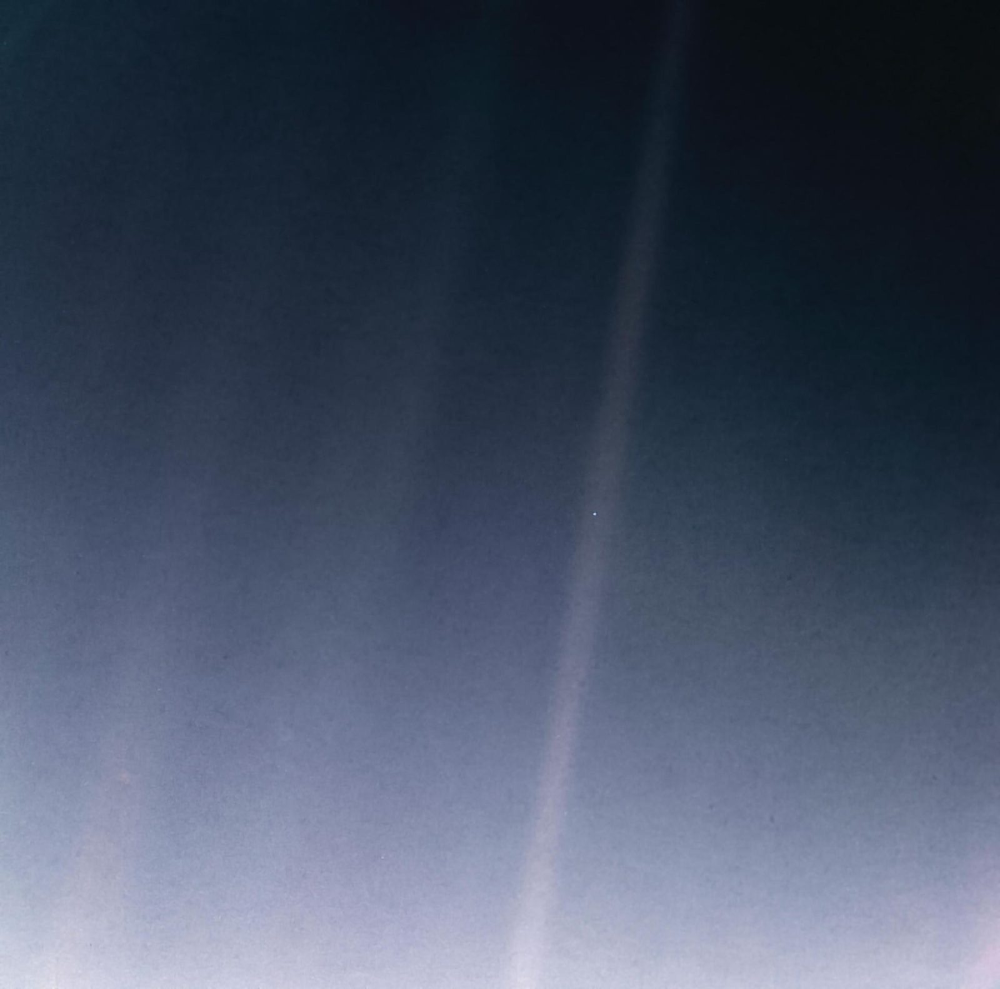
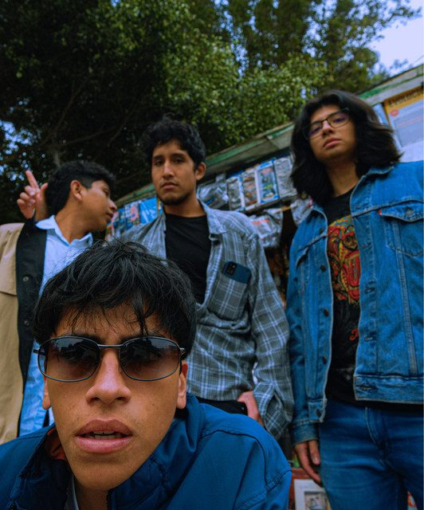

Rock peruano · Hecho en LimaGratis · S/ 0.00
Los Voyagers, banda de rock de Lima
toda la bulla 🚀
Mensaje
Mensaje Nº 001

Diccionario de a bordo

La tripulación
Rock peruano desde Lima
Bitácora — lo que ya transmitimos
La metáfora
Un día‑luz
Todas las rutas
despega un sticker y síguenos ↓